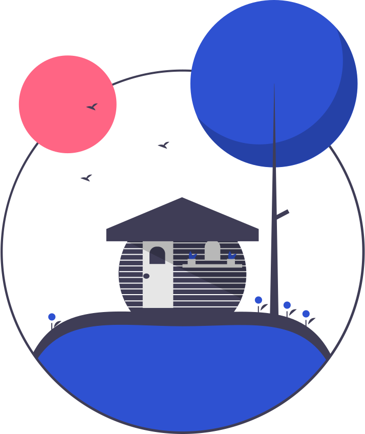
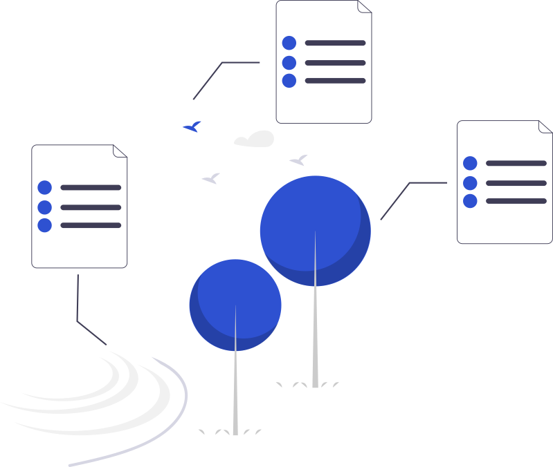

Observatorio de Fenómenos Naturales
Un espacio para registrar, visualizar y comprender los gestos de la naturaleza.
Comienza tu reporte📌 Registro de fenómenos
Documenta eventos naturales desde tu región con precisión y determinación.
🗺 Mapa interactivo
Explora visualmente los reportes en tiempo real desde todo el país. Buscamos expandir nuestras fronteras y lo que estas significan en la ciencia.
📚 Archivo digital
Consulta el legado de reportes enviados por otros observadores. Estos registros permiten comprender eventos que por otros medios serían más difíciles de rastrear.
¿Qué es el Observatorio?
Es un proyecto colectivo que transforma cada reporte en un acto de presencia. Aquí buscamos mostrar cada evento climático —y otros fenómenos— como gestos informados y verificables.
